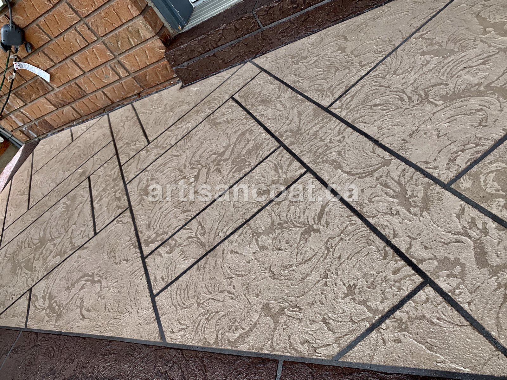
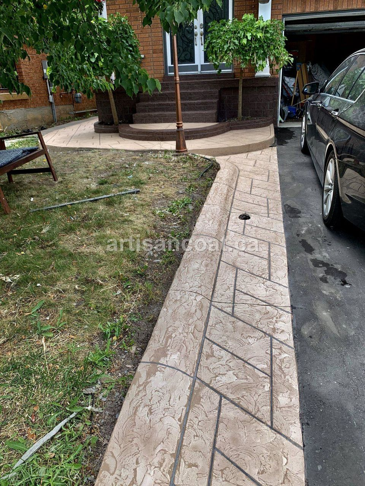

It's the first question almost every Toronto homeowner asks us: "How much is this going to cost?" It's a fair question — and most websites dodge it with "every project is different." That's true, but it's not helpful. So here are real 2026 numbers based on jobs we've completed across Toronto, Mississauga, Brampton, Vaughan, and Oakville.
Use this as a planning guide. Your exact price depends on a few factors we'll explain below, but these ranges will tell you whether resurfacing fits your budget — and they will. In almost every case, resurfacing costs 40–60% less than tearing out and replacing the same concrete.
The Short Answer
For a typical residential surface in the GTA in 2026, concrete resurfacing costs between $2,500 and $18,000. A small front porch sits at the low end; a large pool deck or driveway sits at the high end. Most porch-and-step jobs — the most common request we get — land in the $3,500–$7,000 range.
"Resurfacing isn't a discount version of replacement — it's a better-value version. You get a decorative, sealed, frost-resistant finish for roughly half the price, in a fraction of the time."

Concrete Resurfacing Cost by Surface Type (2026)
These are real-world ranges for residential resurfacing projects across Toronto and the GTA. Final cost varies with size, condition, and finish:
| Surface | Typical Size | Resurfacing Cost (2026) |
|---|---|---|
| Front porch | 100–150 sq ft | $2,500 – $6,000 |
| Porch + front steps | combined | $3,500 – $7,000 |
| Patio / backyard pad | 300–500 sq ft | $3,500 – $14,000 |
| Pool deck | 400–600 sq ft | $7,000 – $18,000 |
| Driveway | standard 2-car | $4,500 – $12,000 |
| Walkway / landing | small | $1,800 – $4,500 |
For comparison, full replacement of those same surfaces typically runs 2–3x higher — a porch replacement alone can be $8,000–$18,000 once you add demolition and disposal. We break that comparison down fully in our resurfacing vs. replacement guide.
What Actually Affects Your Price
Five factors move your number within (and occasionally outside) the ranges above:
- Size of the surface. The biggest single factor. Resurfacing is priced largely by square footage, so a wraparound porch costs more than a small landing.
- Condition & prep required. A surface with minor wear is cheaper than one needing extensive crack and spall repair. Prep is where quality is won or lost — and it's often the biggest variable in a quote.
- The finish you choose. A clean, single-color coating costs less than a multi-tone stamped pattern that mimics stone, brick, or tile.
- Access. A backyard pool deck with tight access takes more labour to reach than a front porch right off the driveway.
- Sealing & protection. The right topcoat for GTA freeze-thaw is essential and is usually included — but premium or high-traffic sealers can add to the total.
A quote that's dramatically cheaper than the ranges above usually means prep is being skipped. A resurfacing job that doesn't properly diagnose and repair the substrate first will look great for a couple of months — then crack, delaminate, or peel. The prep is the product. Always ask what surface preparation is included before you compare prices.
Why Resurfacing Costs So Much Less Than Replacement
The savings come from what you're not paying for. With replacement, a large part of the bill is demolition, hauling away the old concrete, forming, and pouring new material — plus a 1–3 week timeline. Resurfacing skips all of that. We apply a polymer-modified decorative overlay directly over your existing, structurally-sound concrete, so your money goes into the finish you actually see — not into a dumpster.
You also save on time and disruption: most resurfacing projects are done in 1–4 days, quietly and cleanly, versus weeks of jackhammers and blocked access for a replacement.

How to Get an Exact Price
Ranges are useful for planning, but your real number depends on seeing the surface. There are two easy ways to get it:
- Fastest — WhatsApp. Send a few photos of your surface to 416-889-8273 and we'll reply with rough pricing, often the same day. No site visit needed to get started.
- Exact — free on-site estimate. We come to your property anywhere in the GTA, assess the surface honestly, and give you an itemized quote with no obligation. Most estimates take under 30 minutes.
Frequently Asked Questions
How much does concrete resurfacing cost in Toronto?
In 2026, most residential concrete resurfacing projects in Toronto and the GTA fall between $2,500 and $18,000 depending on the surface. A front porch typically runs $2,500–$6,000, a patio $5,000–$14,000, and a pool deck $7,000–$18,000. That's roughly 40–60% less than full replacement. The only way to get an exact figure is a free on-site estimate, but you can get rough pricing fast by sending photos on WhatsApp.
Is resurfacing cheaper than replacing concrete in Toronto?
Yes. Resurfacing costs about 40–60% less than tearing out and replacing concrete because there's no demolition, disposal, or new pour. Replacement of a porch can run $8,000–$18,000, while resurfacing the same porch is usually $2,500–$6,000.
What affects the cost of concrete resurfacing?
Five things drive the price: the size of the surface, its current condition and how much crack and spall repair it needs, the finish you choose (a basic coating costs less than a stamped decorative pattern), how accessible the area is, and whether sealing or extra protection is added. Condition and prep are usually the biggest variables.
How much does it cost to resurface a porch in Toronto?
A typical Toronto front porch costs $2,500–$6,000 to resurface in 2026. Adding the front steps usually brings a porch-and-stairs combination to $3,500–$7,000. Exact pricing depends on size, condition, and the decorative finish chosen.
Can I get a concrete resurfacing quote without a site visit?
Yes. Send a few photos of your surface to 416-889-8273 on WhatsApp and Artisan Coat will reply with rough pricing — no site visit needed to get started. When you're ready, a free on-site estimate confirms the exact cost.